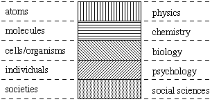

|
Introduction to the Proceedings FIS 94written by Pedro C. Marijuán Information:
a slippery term On the contributions The contributions to these proceedings have been grouped in four parts:
PresentationThe final decades of our century have witnessed stunning changes in the sciences, in technologies, and in societies at large: politics, economy, culture. Perhaps there is only one term capable of summarizing the new traits so distinctive of our time: information. Computers, molecular biology, and telecommunications, prime movers of the present world, are all of them penetrated by information --in their history, in their surrounding conceptualizations, and in their inner details. Indeed an information era has taken over an ostensible atomic or space era. Governments, international institutions and multinational companies are working now at delineating what they call the information society. But, what is information? At least from the scientific point of view, information appears as a vague and incoherent item. Information belongs to that (not so rare) category of scientific terms which, after their successful coinage, suffer so much abuse and overextension that a factual abandonment of research ensues, no matter the apparent brilliancy or social acceptance. In the case of information, the scientific excitement generated during the 40's and 50's --the formative years of information theory, cybernetics, systems theory, etc.-- has steadfastly receded with every passing decade and presently has almost disappeared, except for some very particular applications. The Madrid Conference has been an attempt to rescue information as a central scientific tool and to put it into a new context so as to serve as a basis for a fundamental disciplinary development. The novelty of the conference was that, instead of trying a precise 'atomic' definition of information, and actually getting quagmired in it, information was understood as related to a widespread network of processes potentially involving the integration of cosmic (subatomic), molecular, cellular (neuronal), computational, human and social occurrences, demanding both a unifying and a multiperspectivistic approach. So to speak, instead of the discussion of a single particularized concept, information becomes the intellectual adventure of developing a 'vertical' science connecting the different scales of 'informational processes' --reminding physics itself, which from a pre-Galilean particularized term evolved towards a vertical science connecting the previously separated "celestial", "sublunar", and "terrestrial" occurrences. The contributions to these Proceedings will clarify the above too sketchy ideas. In the introductory sections that follow, some general reflections have been added concerning the nature of the concept (the 'science'), the relationship it has with the other disciplines, and the intimate liaison it maintains with life. Information: a slippery termOriginally, information was a minor, specialized scholastic (Latin) term --"informatio"-- meaning the act of giving or changing the form of a particular piece of matter; it implied, however, a very sophisticated double process back and forth between act and potence. From scholastics the concept jumped to natural philosophy and cultivated language, and later to the emerging scientific disciplines. It is in the 20th century when the concept reaches its peak: information makes a triumphal massive entrance in the postwar period, with cybernetics, systems theory, the so called information theory, game theory, control theory, the development of computers, the birth of artificial intelligence, the new linguistics, the neguentropy discussions, the chase for DNA, etc. Indeed an atmosphere of tremendous optimism was generated in relation with the concept. In 1941, in a letter to von Neumann, R. Ortway captures the mood of the times when he writes: "these days everybody is talking about organization and totality. Today´s computing machines, automatic telephone switchboards, high-voltage equipment, such as the cascade transformer, radio transmitter and receiver equipment, and also industrial plants or office are technical examples of such organizations. I think there is a common element in all of these organizations which can be the basis for an axiomatization." (Nagy et al., 1989, p. 188) Information, clearly was the answer. In 1948, N. Wiener, the founding father of cybernetics, was definitive: "Information is information, not matter or energy. " (p. 132). "The role of information and the technique of measuring and transmitting information constitute a whole discipline for the engineer, for the physiologist, and for the sociologist." (Wiener, 1948, p. vii) But perhaps the time was too short, and the theories and disciplines contained too many gaps. Somehow, the concept became confusingly entangled in too many places. Looking in retrospect it is easy to appreciate a process of conceptual degradation and loss of confidence --the hegemony won by the sciences of the artificial (Simon, 1969) during this time was not alien to that. Progressively, in spite of its tremendous potential, information was felt by the new generations of scientists coming to these interdisciplinary fields more as a source of misunderstanding and paradoxes than as a source of enlightenment. A recent comment (1989) on information theory by E. Wigner illustrates the prevalent change of mood: "The present information theory is entirely uncharacteristic. And I think it would be time to change it. But I have a very hard time with it. I have not succeeded. Perhaps I should not have mentioned it because it is not good to admit that one tries to do something and is not able to do it." (p. 256) Certainly information has become "Jack of all trades". During these decades it has been entangled:
The use of the term information in all these provinces is not incorrect, but its overall coherence has become minimal. It seems that every aspect of human endeavor or biological behavior --or even of cosmic evolution-- contains and processes information; but there is no glimpse yet as to how such overextended acceptations can be consistently conceptualized. The advancement in the solution of this puzzling concept, entrenched into the foundations of numerous disciplines, may demand drastic changes in view --perhaps including the reflection on what it actually means to establish a 'disciplinary' point of view. Information as a science: a solution to the puzzle?In relation to the above confusing panorama, some considerations addressed by the Madrid conference seem pertinent. First of all, there is the assessment that significant changes have happened in some of the above fields which imply new possibilities in order to advance towards the consolidation of the concept (the 'science'): particularly in molecular biology, computer sciences, and the neurosciences; and also in physics and the political sciences. The historical parallel with the foundational period of physics may be illustrative. During the scientific revolution of the 16th century the very concept of physics was at stake --amidst a generalized ambiance of scientific and social crisis during most of that century too. Intense debates were raging between the Aristotelian-scholastic 'old guard' and the New Science followers: Erasmus, Luis Vives, Thomas More, Petrus Ramus, Francis Bacon. A significant aspect of the discussion was about the meaning of physics as something in itself, as the 'substance' underlying all nature. As we know well, particularly after the Galilean and Newtonian developments (and of many others: Leonardo da Vinci, Simon Stevin, Johannes Kepler, René Descartes), physics was to become not just a concept but a splendid science comprising a host of interrelated processes. The suspicion about the concept of information is that maybe something similar is happening. What we are naming under the label of information might become in itself not a concept but an enormous network of interrelated multiscale processes. What sort of processes? Following Conrad's insights (1983, 1984) on the vertical 'flow' (cross-scale percolation) of interrelated information processes from the subatomic realm to molecules, cells, organisms and ecosystems, we can envisage a parallel 'flow' of information comprising human societies too: from countries and socio-economic systems at the top, to institutions and individuals, and then to nervous systems, and down to the rest of the scale. How could the milestones of this information 'flow' between such different 'societies' be delineated? Let us remark that the flow of energy from the solar photons to every level of an ecosystem or of an organism was delineated not because of the discussion of a single concept, but because a powerful scientific discipline, physics, was successfully at work. The intuitive notion of absence may provide another strategic entrance into the intricacies of the informational 'societies'. Numerous instances of informational change appear as temporary absences or gaps within a complex dynamical intertwining of opposing processes --involving symmetry breaking and symmetry restoration (Matsuno, 1985). Counteracting such transient gaps or "functional absences" (symmetry breakings) within the nested life-cycles of the biologico-informational entities, from molecules to cells, organisms, and societies, generally implies a cascade of upwards and downwards processes. The functional absences or voids seem to acquire a state of flux: moving up and down, horizontally and vertically, fanning-in and fanning-out within every social level; encountering the appropriate counteracting mechanisms or not, and being temporarily solved or not (Marijuán, 1995). Formally, the structural reorganizations stemming from the solution of these functional absences at different levels could be related to the entropy concept (or to Schrödinger's negative entropy). The biological solutions generally imply synthesis (production) and the subsequent necessity of structural (metabolic) inputs from the environment. However, because of the current conceptualization of entropy, this crucial property of living beings, the metabolic openness, implies a complicated 'inverted' reasoning (Stonier, 1990; Swenson and Turvey, 1991). The genuine (non-metabolic) information processes endowed with negligible energy --e.g., cellular signaling systems, nervous systems-- make things far worse... Overall, the interrelationship between information, symmetry, entropy, and uncertainty is far from being properly established. At the end it might imply quantum physics reappraisal (Conrad, 1989; Rosen, 1991; Matsuno, 1993). This line of consideration finally leads to the profound relationship existing between the terms information and society. It can be argued that the existence of societies is dependent on the generation, exchange, and processing of meaningful information amongst their constituent members. So to speak, inanimate matter survives passively, just following the standard physico-chemical laws; but biological and para-biological societies need be involved in a permanent web of self-modifications and problem-solving activities in order to achieve their survival. The life-cycles of the component individuals appear both as problems and problem-solving engines, becoming the sources and sinks for the information exchanges (providing them with 'meaning'). This socioinformational way of existence can be pinpointed in the cell, "society of enzymes", in the organism, "society of cells" (or highlighting the role of the nervous system: "society of neurons"), and within the "society of individuals". Thus, the search upon the nature and dynamics of information would require focusing on the three above fundamental information-based 'societies' (keeping in mind the underlying 'society of vacuum' and the 'society of nations' at both extremes of the spectrum, and the case of ecosystems having a mixed condition). However, none of these societies provides a complete view on information. Each one provides a unique set of clues on the nature and dynamics of information; but none of these societies alone, no solitary discipline, seems capable of solving the conundrum of processes surrounding the concept --they have to advance together. The development of a vertical information science, both with a unifying and a multiperspectivistic penchant, may represent a gradual outcome to the puzzle. At the same time it implies addressing the unfrequently discussed issue of the "disciplinary specialization" and the subsequent "integrative problem" of the sciences (or in other words, the actual problem-solving dynamics of the system of specialized disciplines). As a matter of fact the development of the new science represents a challenge to go beyond the traditional methods and division of work within scientific communities. As the Madrid conference put it, we badly need to delineate a "common house", an interdisciplinary umbrella where the cross-fertilization of such diverse insights might take place in a new type of multidisciplinary environment. Information science and the system of the sciencesTraditional discussions on disciplines are centered on reductionism, holism, unification of science, and the like. However, what constitutes a discipline is seldom discussed (what does following a discipline imply?, what is the origin of the term?, why do we have many separate disciplines?, how do they relate each other--do they work independently or as a system?). The discussion on information forces a reconsideration of both the classical issues and these seldom formulated questions. The "territorial" view of disciplines, with the related idea of fields and subfields of specialization, constitutes a widespread intuitive notion. The logical-positivist emphasis on reduction between adjacent fields has added the concept of hierarchy and established an order of disciplines parallel to the corresponding 'material levels' of reality (Figure 1). The pinnacle corresponds to physics. This simplified arrangement has been endorsed by logical-positivist authors, systems theorists, and post-positivist authors (explicit quotations from Ludwig von Bertalanffy, Kenneth Boulding or from Karl Popper can be pointed out--see Marijuán, 1994; Küppers, 1990). A rather different picture can be drawn, however, allowing for the superposition or overlapping of disciplines. Then, two complementary aspects become highlighted: that basic disciplines overlap their territories --and in these overlappings new disciplines are born-- and that real knowledge of any material aggregate forces us to apply a plurality of disciplinary approaches and to integrate them (Figure 2). The overlapping or combinatory dynamics at work among the sciences can be easily observed in the new diagram. Almost every successive vertical overlapping of Figure 2 makes sense and corresponds to an existing subdiscipline: chemical physics [physical chemistry], biophysics, psychophysics; sociophysics; biochemistry, psychochemistry [neurochemistry], sociochemistry [toxicology, environmental chemistry]; biopsychology, biosociology [sociobiology]; psychosociology (Figure 3). An integrative dynamics can be observed too. A spattering of 'object oriented' integrative disciplines emerges in the horizontal dimension of the diagram: engineering disciplines (nuclear, chemical, mechanical, etc.), physiology (ecology), medicine (anthropology), political philosophy (Figure 3). These multidisciplinary sciences correspond to the plurality of approaches necessary for understanding their respective objects, now taking into account the whole material, industrial, biological, cultural, and social interrelationships in which these objects are immersed. Again, some of these multidisciplinary sciences can be applied outside their own horizontal strata, generating new subdisciplines, e.g.: bioengineering, socioengineering, ecosociology, etc. The idea of information science dovetails into this enlarged picture. As a putative vertical science it creates its own spattering of subdisciplines in the overlapping with the other existing sciences: information physics, information chemistry [molecular computing], bioinformation [artificial life], informational neuroscience [artificial intelligence], and socioinformation (Figure 4). Information physics has recently been vindicated as a new discipline (Stonier, 1990; Haefner, 1992). The recent interdisciplinary attempts of molecular computing and artificial life might be associated, like artificial intelligence, to the overlappings of a unitary information science widely conceived too. In this regard, and without discussing their particular contents, information science promotes an elegant alignment of these recent interdisciplinary explorations and suggests a unifying sense for the whole of them. Finally, socioinformation might be an adequate label for the pioneer insights of McLuhan (1964) and for some contemporary elaborations on political sciences (e.g., De Vree, 1991). In addition, information science may open a new line of reasoning on the integrative dynamics of the sciences and the overlapping phenomenon itself. Disciplines are no fields by any means, rather they correspond to restricted perspectives which the scientific communities have historically elaborated searching upon partial aspects of reality. Like the specialized sensory modalities of nervous systems, disciplines provide reliable partial information about the external world, but in order to cope with the (non-restricted) real-world problems they need integration (and overlapping) with the extra information provided by the other disciplines / sensory modalities. The sciences appear, then, as a social cognizing system: both in the sense of a plurality of specialized disciplines which are continuously mixing and rearranging their contents for the sake of the problems they have to solve, and also as being the result of communities of dedicated scientists in a continuous interaction. The realization of this sociointegrative dynamics, in the double interdisciplinary and intradisciplinary dimension, becomes the central problem in the praxis of science (the reductionist problem only characterizes a very narrow aspect), as witnessed by the continuous necessity of meetings, means of communication, interdisciplinary flows, creation of new specialties, etc. The scientific method appears from this point of view as the conditions to be met for a coherent decomposition of problems by communities of problem solvers whose workings are separated in time and space (as witnessed by the citation structure itself). Although the sciences have become the most sophisticated social sensorium, with problem-solving characteristics at the highest abstraction level, and have increased --particularly at the successive scientific revolutions-- the range and scope of their institutional presence and problem-solving activities, their overall dynamics remains obscure and largely within the realm of pragmatics. Historically, every emerging science has brought new philosophical and interdisciplinary views on the working of the other sciences. Information science, as the science of "problem solving", could bring new insights on the poorly understood facets of social and scientific problem-solving. Information and lifeUnder the guiding principles of the sciences of the artificial (Simon, 1969) information had a predominant anthropocentric nature: it was conceived as an inmaterial component accompanying man-made artifacts. From that point of view, an "information science" was founded in the early 60´s. It was the result of two conferences held at the Georgia Institute of Technology in 1961 and 1962. Dominated by pragmatic goals for more efficient systems for organizing and storing (scientific) information, that early information science had a particular mandate to search for the "grand, unifying relationships of human and human-machine communication". It was defined as derived from, and related to, mathematics, logic, linguistics, psychology, computer technology, operations research, the graphic arts, communications, library science, and other fields --in its own style having a remarkable interdisciplinary breath. Nevertheless, in a decade or so, computer sciences and artificial intelligence departments engulfed the incipient information science communities. Not many authors kept alive the interdisciplinary attempt (Brookes, 1974; Scarrot, 1986). Now, 35 years later, the sciences of the artificial are in retreat, perhaps including its latest companions: chaos science and the sciences of complexity (Horgan, 1995). And as the Madrid conference put it, there is now the pervading sensation that it is from the inner working of life, from the dynamics of biological information, that we should contemplate the anthropocentric realm --particularly the sciences-- and not the other way around. Actually, from life and information the foundations of all the other natural sciences can be reached out; we have already mentioned the reappraisal of quantum physics (Conrad, 1989; Rosen, 1991; Matsuno, 1993). The new foundational attempt at the Madrid conference has put the emphasis on the intimate relationship between life and information --at every level. It is a truism that the "problems" of countries are solved by institutions, companies, and individuals; that the problems of individuals are solved by the neurons of their nervous systems; and that the neuronal problems are solved by their populations of active molecules (enzymes, proteins, receptors, channels). Every instance of life, social, organismic, cellular, has its own resources --including the sciences themselves in the case of modern societies-- in order to detect, counteract, and solve its existential problems, passing them, up and down, or horizontally, to others dimensions of life. How problems in one realm can be coherently broken down in order to be solved by underlying populations of specialized 'microscopic' agents constitutes a genuine algorithmic feat, but it turns out to be trivial for the agency of life. Our present system of the sciences has not considered these informational processes in their entirety. They have been cut into separate disciplines that barely understand each other at their borders. The internal continuity of life's problem-solving realms has consequently disappeared, and information has been disposed of. But the neglect of information does not mean that it stops its incessant percolation: only that our scientific and social understanding of its working has been impoverished. Two generations ago, some critical philosophers had anticipated these conceptual troubles. Whitehead (1925) called attention to the lack of vision and superficial thought in the increasingly professionalized scientific communities. Ortega y Gasset´s essay on the "barbarianism of specialization" in the 30´s was a brilliant but unattended warning about the future consequences of the then emerging process of narrow specialization. Overspecialization and professionalization are the core of the scientific enterprise today. It is a fact that the present system of the sciences has contributed exceedingly to technological development, but it has become a crippled instrument for the solution of our highest level problems: political, economic, ecological, international ones. The sort of problems where information flows reach their highest complexity. We live in an era of dramatic changes --brought about by the sciences themselves. Directives about the information society are not enough to advance towards the solution of the many interrelated contemporary crises. We need a well balanced system of the sciences in order to illuminate our global use of knowledge and to improve our social and international problem-solving. Centuries ago, it was Erasmus, Vives, Ramus, More, who felt in their time the necessity of new science. Like them, we need new science now. Perhaps the refoundation of information science will contribute to opening the system of the sciences in new required directions. AcknowledgmentsThis conference was launched as a formal project in 1991 by Michael Conrad and this author. In 1993, Fivos Panetsos (Universidad Carlos III de Madrid) undertook the adventure of convoking and financing it. Later, Araceli Sanchis would become in charge of the organization and logistics of the conference. Both deserve the highest gratitude. The especial collaboration and early support of the following scientists has to acknowledged too: Koichiro Matsuno, Tom Stonier, Johan K. De Vree, Antonio Prevosti; toghether with Péter Érdi, Peter Århem, Otto Rossler, George Kampis, Efim Liberman, Ramón Margalef, Yukio Gunji, Ray Paton, A.G. Portela and members of the 'Grupo Forma' (Lisbon). The University Carlos III of Madrid (OTRI), the Ministry of Education (DGICYT), and the Community of Madrid (Consejería de Cultura) generously provided the necessary funds. The University of Zaragoza also collaborated in the support of the conference: Vicerrectorado de Investigación, Departamento de Ingeniería Eléctrica y Electrónica, and Fundación Circe. ContributionsThe contributions to these Proceedings have been grouped in four parts:
Fundamental concepts in quantum physics, computer sciences, physics and chemistryMichael Conrad opens the First Part with a provocative statement: that the unmanifest properties of the vacuum percolate through the whole cascade of informational processes, up to the living cell or to the intelligent observer (Schrödinger's cat included). Koichiro Matsuno refers to the problem of quantum-inconsistency: information (and unidirectional time) may emerge from the quantum formalisms once inconsistency is acknowleged in the internal measurement process; then biological information follows naturally. George Kampis deals with the limitations of formal (computing) systems, discussing the validity of the Church-Turing thesis and postulating a chemically motivated "self-modifying" type of processing. Yukio P. Gunji et al. focus on biological computation, language games, and non-von Neumann systems, emphasizing the aspects related to measurement. Finally, Tom Stonier discusses troublesome aspects in the relationship between information and entropy (say, one of the many prices that physics has to pay for neglecting information as a fundamental property of the universe). Living cells and their molecular components ("society of enzymes")In the Second Part, Ramón Margalef recapitulates the relationship between the living and the non-living organization, including the role of information "trails" in the overall structure and dynamics of ecosystems. George R. Welch introduces the topic of enzymes: their quantum, mechanical, catalytic and biochemical properties represent the 'rockbottom' of life (these are the first information processing devices really equipped to deal with the 'real world' problems, and not just with simplified 'computer world' problems). Ray Paton discusses the interdisciplinary and epistemological relationships between cellular processing and the related computer models (both biology and computer sciences are eagerly benefitting from such symbiotic relationships). Pedro C. Marijuán traces the "absence phenomenon" back to its biochemical and molecular biological roots: protein degradation (is a cell made up of 'eternal' proteins environmentally viable?), cell specialization, cell death, and multicellular problem-solving. Efim A. Liberman and S.V. Minina retake the enzyme topic from an unusual perspective: that the exquisite quantum "computing" properties we observe in enzymes are a necessary precondition for intelligent life; the so called 'anthropic principle' becomes a sort of 'enzymatic principle' here. Neurons, nervous systems and organisms ("society of neurons")The Third Part starts with Péter Érdi's approach to brain structure and function, from a monistic (hermeneutic) perspective reconciling the "device approach" and the "philosophical approach". But Peter Århem's view is dualistic (in his standpoint the intrinsic randomness of molecular channels and receptors becomes a central argument). Then Ernest L. Rossi discusses the behavioral and psychobiological aspects of brain function, including the potential healing repercussions of the 'abstract' neuronal problem-solving (e.g., neuropeptides, neurophysiological rythms). Deborah Conrad's contribution analyzes the phenomenon of consciousness and subjective experience, and how the physical brain can build "meaning". The final contribution of this part, by Otto E. Rossler, is a synthesis of physical, biological, neuroscientific, and philosophical ideas. His developments on "endophysics" elegantly interconnect scientific with ethical and esthetic aspects. Information and the organization of social systems ("society of individuals")The Fourth Part starts with Johan K. De Vree's analysis of the basic categories of socio-political systems: order, information, structure, stability... Then Fernando Rodrigues-Carvalho and John Dockery speculate on what does constitute a system 'property' (they elaborate on previous work dealing with 'social entropy'). Two contributors retake the subject of information from a general standpoint, James Barham, Peter Fleissner & Wolfang Hofkirchner, their particular emphasis being on non-linearity, information and epistemology; and the development of a unifying information theory in relation with evolving-self-organizing systems. Robert Agelink and Nanneke van der Heijden apply the concept of information to the processes of 'steering and regulation' in social systems. Finally, John Dockery discusses an 'improper' topic: the relationship between information processing and warfare. Incidentally, this topic generated controversy. It is obvious that some branches of science and engineering (e.g., physics, artificial intelligence) have greatly enhanced the capabilities of weaponry and "war technology" --and have received generous public support because of that. It may sound naive, but the promise of the new information science is to enhance the intellectual and moral tools for "peace technology". The search for harmonious ways of problem-solving, socially and at the international sphere, will be a substantial part of the information science programme.
 Figure 1. The horizontal hierarchical representation of the sciences
Figure 2. Vertical representation allowing for the superposition or overlapping of disciplines. The study of objects in the lowest strata shows the highest levels of multidisciplinarity and complexity.
Figure 3. Subdisciplines that emerge from the vertical overlapping of basic sciences. Every number corresponds to an existing subdiscipline formed by a basic science working outside its "preferred" level e.g., 1: chemical physics, 2: biophysics, 5: biochemistry, 8: psychobiology, 10: psychosociology, etc. (see text) Horizontally, there appear the 'object oriented' integrative disciplines: e.g., engineering, physiology, and so on.
Figure 4. The proposed information science and its vertical overlappings with the other basic sciences. Some of these overlappings correspond with recent interdisciplinary explorations (molecular computing, artificial life, etc.) |
Last changed at: 02/02/02 02:02h.